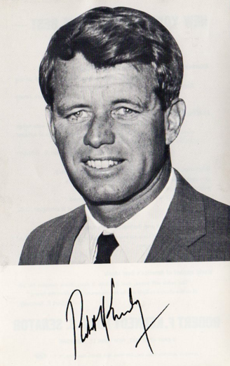

A42-POL-042 // HISTORICAL CLAIM REVIEW
The Assassination of Robert F. Kennedy
Assessment: Sirhan's role in the shooting is established, but confidence about whether he fired the fatal shot or whether another gun was involved is lower than the conviction alone suggests.


The precise allegation
Sirhan Sirhan was convicted of killing Robert F. Kennedy in 1968, but acoustic analyses and witness accounts have fueled claims of a second gunman or security involvement. The original investigation and later reviews disagreed about the number of shots. No court has established an additional shooter, and Sirhan's parole hearings concern his release, not a retrial of the assassination.
Chronology and political context
Kennedy was shot in a Los Angeles hotel kitchen after winning the California Democratic primary on June 5, 1968. Sirhan was arrested with a revolver and convicted. The Los Angeles Police Department investigated; the California Supreme Court later rejected appeals. Public attention returned to the case after audio analysts argued the recording captured more shots than Sirhan's gun could fire.
Primary historical record
The trial record, autopsy, ballistics, police photographs, and recorded audio are the core evidence. Sirhan's gun held eight rounds and was recovered with bullets remaining, while witnesses reported more shots; however, sound analysis interpretations are disputed and the recording is not a calibrated forensic count. The official investigation concluded Sirhan fired the fatal bullet.
Corroboration and contrary evidence
Independent researchers including forensic audio analysts have challenged the official shot count, while the 1975 California Senate investigation found no credible evidence of a conspiracy. Historians and forensic experts differ on what the acoustic recording can establish. The physical proximity of the fatal shot and the bullet evidence complicate a simple second-shooter scenario but do not eliminate every unresolved detail.
What remains uncertain
The exact sequence of shots and possibility of shots fired by others remain contested because the crime scene was poorly preserved by modern standards. The autopsy's reported rear-entry wound conflicts with Sirhan's position. Analyses depend on degraded recordings, assumptions about echo and gunshot sounds, and interpretation of witness memory under chaotic conditions.
Calibrated verdict
Sirhan's role in the shooting is established, but confidence about whether he fired the fatal shot or whether another gun was involved is lower than the conviction alone suggests. A coordinated conspiracy has not been proven. The evidence supports an unresolved forensic dispute, not a definitive claim that security personnel or political rivals arranged the killing.
What evidence could change this assessment
A modern independent examination of original, authenticated audio and ballistics material, with transparent methods and peer review, could materially change the assessment. Previously unavailable autopsy or scene records might clarify weapon position. Any claim of a second gunman would need positive physical evidence, not only a shot-count inference.
Sources and source limits
- California State Archives — Robert F. Kennedy assassination recordsContains state investigation records and materials; uneven preservation and later dispute over interpretation require consulting originals carefully.
- National Archives — House Select Committee on Assassinations reportThe HSCA examined the RFK case and reported no basis for a conspiracy; the report reflects 1970s forensic tools and methods.
- Los Angeles County District Attorney — Sirhan Sirhan case overviewOfficial prosecutor records and statements offer case details; institutional account is not a substitute for independent forensic review.